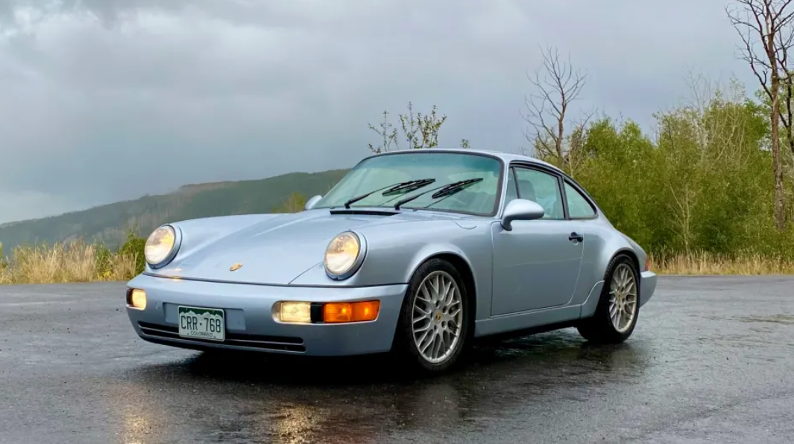

As much as some look at classic cars with an investment mindset, I believe that cars are simply tools for creating adventure-filled memories. I'd like to introduce my 1992 Porsche 911 Carrera 2 as an example.
Jason Meshnick . Jan 4, 2025
There’s a guy who drives a 1980s Ferrari around the Rockies to go skiing. He’s become an Instagram sensation because using a classic Ferrari as a ski car is totally out of character. The cars are unsuited for that kind of abuse, and even he calls it a questionable decision.
If the car were a 1990s Porsche 911, nothing about his activity would be questionable. It would be praiseworthy and fun but not irrational. Porsches are designed around the simple joy of driving, whether you’re commuting to work or spending the day on a racetrack. Unlike Ferraris, they’re made to be part of your daily life. That’s always been the case, and many classic Porsches remain daily drivers.
Mine is 33 years old. It was driven off the factory floor the day I finished college and sold to a guy who lived about 10 miles from me. When I moved across the country, it must have sensed my absence and found a way to follow the next year. More than a decade later, as I searched nationwide for a 911, my car was for sale in my town for exactly all of the money I had available.It’s a cheesy love story, but it’s true.My Porsche is a 1992 911 Carrera 2, and it’s one of the most important cars Porsche ever built.
The 964 is the most important Porsche ever built
When my car left the factory, Porsche was at a crossroads. Despite having been an ‘80s icon, they were now a nearly bankrupt maker of sports cars fighting a global recession with a halo product that was first designed in the 1960s. The 911 had been slated for retirement years earlier, but customers protested. Management came to their senses and began to lay out the company’s future.
The result was an interim car–one that combined cutting edge technology with old world craftsmanship. 80% new parts wrapped in a package that looked remarkably similar to its older siblings. Launched in 1989, this generation of 911 became known by its internal project number, 964. The 911 turned 60 this year, which makes 964s the mid-generation of 911s. It was the first modern 911.
The 964 brought the 911 into the modern era
It was the first 911 to use active aerodynamics. Above 48 mph, the rear spoiler raises to provide enough downforce to keep the rear end pointed in the intended direction.

It was the first 911 to use a coilover suspension at all four corners. Prior generations used a torsion bar setup-like a VW Beetle. It was the first 911 to offer all-wheel-drive. The new Carrera 4 borrowed drivetrain technology from the 959 supercar.
And the HVAC, which had been laughably bad in earlier 911s, finally worked-you could even defrost your windscreen! Combined with the AWD, the 911 had finally become a true ski car. Other firsts for the 911 introduced on the 964 included airbags, power steering, ABS, and an optional automatic transmission called the Tiptronic.
However, the 964 retained the character that made prior generations of the 911 so beloved. In addition to the early 911’s mid-century good looks, the flat-six engine was left where it belonged–behind the rear axle–though it was enlarged to 3.6 liters with two spark plugs per cylinder.
Jerry Seinfeld once said that you don’t know if a car was well built until it’s 30 years old. 964s were the last hand-built 911s, and mine remains rattle-free. It’s as solid as a bank vault, and the doors still emit a mechanical “ping” sound when they’re shut.
No better way to test a car's mettle than a road trip
Seinfeld also said that if you get to heaven and have the lowest mileage Porsche, you lose. You lost because you failed to create memories that will stay with you forever.
In 2023, I joined 100,000 other Porsche fans in Monterey, CA, for Porsche’s Rennsport 7. If you haven’t been to Rennsport, make it a point to attend the next one. It’s a celebration of the brand’s motorsport history that showcases racing action and automobiles from the very first Porsche up to the latest race cars. It was one of the most memorable trips I’ve ever taken.
I drove my 911 and turned the entire trip into a 4,500-mile expedition across nine states, from Colorado to California, and up the coast to Canada. While at Rennsport, I got to drive the famous Laguna Seca racetrack, and it’s true what they say–dropping into the corkscrew is like falling off a building. It’s gnarly and every car person should drive it at least once.
Later, on my way up the coast, I experienced the 911 as a fast and nimble touring car. I drove up the California and Oregon coastline, stopping in small towns to see the tourist attractions. Highlights included meeting Paul Bunyan and driving through a redwood tree. Sadly, Bigfoot remains elusive.
My 964 is as good on the highway as it is on the canyons
One thing I learned was that my 911 is the ultimate road-trip car. It’s comfortable, fast, and has enough room in the rear seats to stash any souvenirs I might pick up. It’ll return about 26 mpg in a mix of high-speed interstate, city, and backroad driving. 911s were designed with the Autobahn in mind, and that becomes apparent the second you hit the highway. Even at 100 mph in the 100-degree temps of the Mojave Desert with the A/C cranked, the engine ran cool.
However, the car really comes alive as a canyon carver. Following other Porsches on the Angeles Crest Highway outside of Los Angeles, I get the same sensation as when I’m on a freshly groomed ski slope laying down high-speed turns. It literally feels like it’s carving the canyon. The leather steering wheel is light in my hands, and I can feel each tire clawing for grip. The brakes require effort but are quick to slow the 3000-pound car.
It's not perfect, but it's close
Admittedly, not everything about my 911 is perfect, but a list of its weaknesses sounds like the type of thinly veiled positives a job interviewee might come up with.For one thing, there are no cup holders. I make due by drinking out of screw-top bottles and not cans; it’s a small price to pay.
On highways, it could use a sixth gear, which was made available in the generation of 911 that followed the 964. But, the reviews all say that the 964’s gear ratios are superior to the later model’s for twisty canyon driving, which is where I spend most of my drives, anyway.
Not cheap to maintain, but cheap to own
Of course, air-cooled 911s are not cheap to maintain. I budget about $2,000 a year in maintenance. Many years are free, and others make up for it. (If that sounds pricey, my 10-year-old Subaru has cost me $2,500 in yearly depreciation, before maintenance.) Plus, my Porsche has more than doubled in value since I bought it, so I don’t worry about maintenance costs.
Will values continue to rise? Yes. A good 964 Carrera 2 coupe will remain pegged to the cost of a new base 911, presently around $120,000. In 1992, the base price of a Carrera 2 was $55,000, which, in today’s money, is, you guessed it, $120,000. I doubt that the 2035 911 Carrera will cost any less.
There are lots of other reasons why a 964 will continue to rise in value. For one thing, as new Porsches become larger and more complex (and hybrid?), many buyers will seek out simple, analog cars. I’m not the only person I know who views a mid-week drive in an old car to be a 45-minute vacation from an increasingly high-tech life.
Another reason is the economics of supply and demand. There weren’t many Carrera 2 coupes made, and good ones are hard to find. Tuners like Singer have been scooping them up because the coil-over suspension makes them easy to modify. The 3.6 liter, twin spark engine is a bonus.
Does that mean that a 964 is a good investment? Not really. The fact is, you shouldn’t buy a car like this as an investment. You should buy it because you love it, and because of the great memories it will bring.
And creating lasting memories is what it’s all about. So, maybe Ferrari guy had a point. We should enjoy our cars as much as possible. Do questionable things with them because life is short. The thing is, my 911 just makes it easy to have those memories. As the first modern 911, it’s like having a one-car car collection. Old enough to feel special but easy enough to live with that I don’t need to think twice about using it.